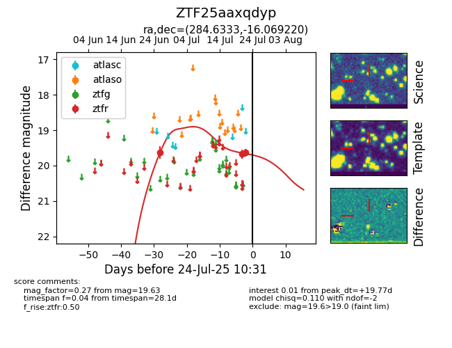

Target ZTF25aaxqdyp at 2025-07-24 10:31, see:
FINK: fink-portal.org/ZTF25aaxqdyp
Lasair: lasair-ztf.lsst.ac.uk/objects/ZTF25aaxqdyp
ALeRCE: alerce.online/object/ZTF25aaxqdyp
alt names
ZTF25aaxqdyp (ztf,fink)
coordinates:
equatorial (ra, dec) = (284.6333,-16.06922)
galactic (l, b) = (19.3081,-8.78274)
photometry
last ztfr=19.63
3 ztfr detections
